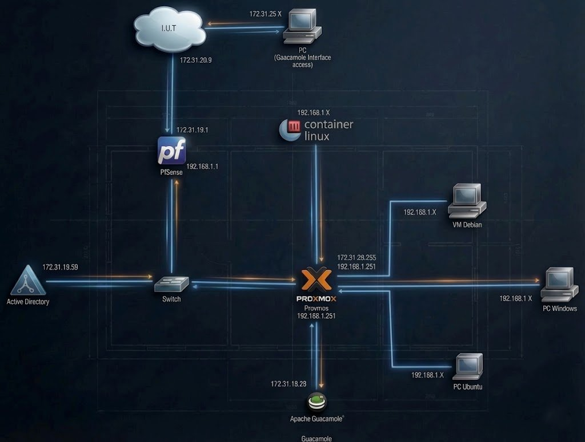
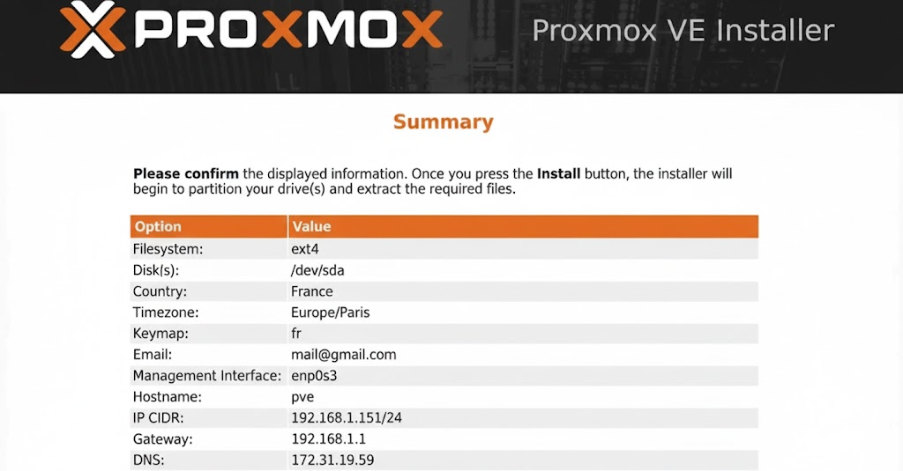
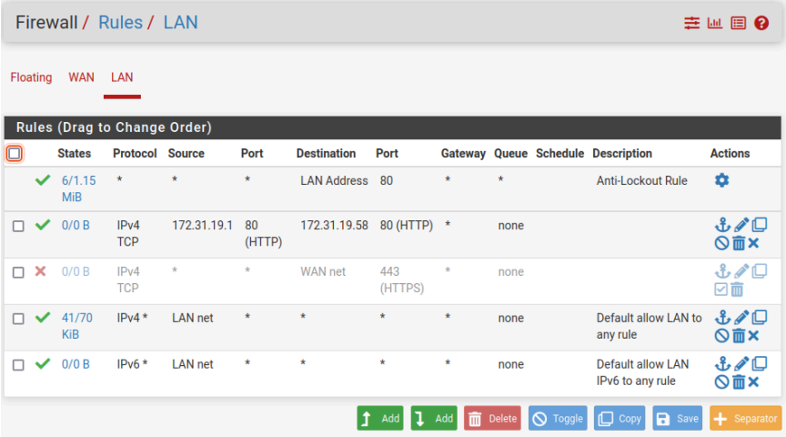
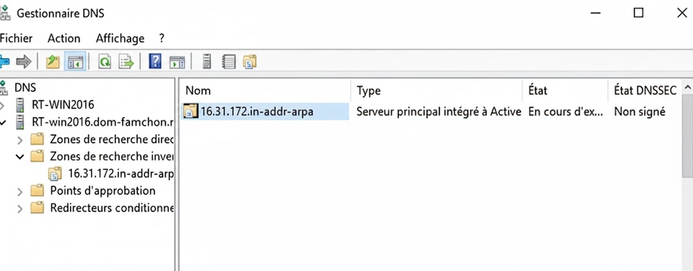
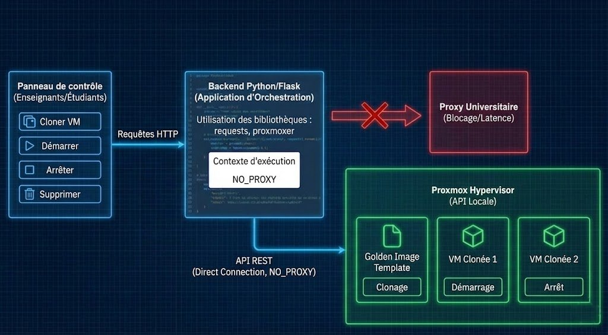
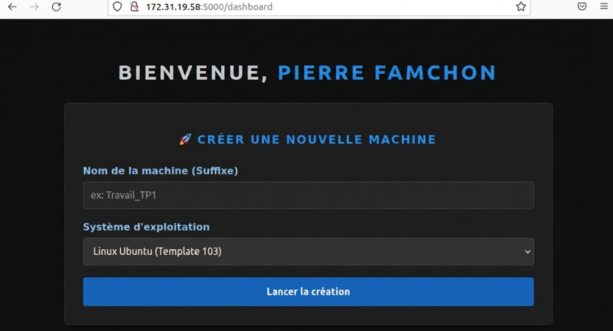
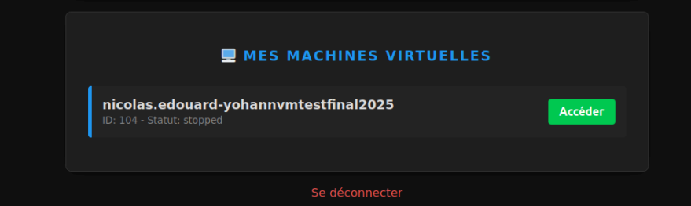

Administrer
Concevoir, déployer et administrer des infrastructures réseaux et systèmes complexes.
Apprentissages Critiques - Niveau 3 :
➥ Concevoir un réseau
AC31.01 | Concevoir un projet de réseau informatique d’une entreprise en intégrant les problématique de haute disponibilité, de QoS, de sécurité et de supervision
Vision Stratégique et Architecture VDI
Dans le cadre de la SAE 5.01, j'ai conçu une infrastructure de virtualisation (VDI) complète pour répondre aux besoins de flexibilité des TP étudiants. L'architecture repose sur une segmentation stricte des zones :
- Zone WAN (IUT) : Interface d'accès public connectée au réseau universitaire.
- Zone LAN Privée (
192.168.1.0/24) : Réseau totalement isolé hébergeant les machines virtuelles et les services critiques (AD, DNS).
Sécurité et Filtrage Avancé
J'ai implémenté cette isolation au niveau de l'hyperviseur Proxmox en configurant un pont Linux spécifique (vmbr1) agissant comme un switch virtuel interne, sans lien physique direct. La sécurité périmétrique est assurée par un routeur virtuel pfSense, agissant comme point d'entrée unique. J'y ai configuré des règles de pare-feu strictes :
- Blocage par défaut du trafic entrant sur le WAN.
- Règles d'administration : Restriction de l'accès SSH/HTTPS à l'hyperviseur (
192.168.1.251) uniquement depuis le poste d'administration (192.168.1.10). - Port Forwarding : Redirection unique du port 8080 vers le serveur Guacamole (
172.31.19.58) pour l'accès utilisateur, masquant ainsi l'infrastructure interne.
AC31.02 | Réaliser la documentation technique de ce projet
Dossier d'Ingénierie et Reproductibilité
J'ai produit un rapport technique complet garantissant la reproductibilité de l'infrastructure. Ce dossier documente chaque étape critique :
- Configuration Réseau Système : Documentation explicite des fichiers de configuration, notamment
/etc/network/interfacessur Proxmox pour la définition des pontsvmbr0(WAN) etvmbr1(LAN) . - Gestion des Contraintes Proxy : Documentation précise des adaptations nécessaires pour le réseau de l'université, incluant la configuration d'APT (
/etc/apt/apt.conf.d/70proxy) et des variables d'environnement.bashrcpourwget/curl. - Services d'Annuaire (DNS/AD) : Détail de la création des zones DNS directes et inversées (zone
16.31.172.in-addr.arpa) essentielles pour la résolution interne.
Suivi de Projet
Le dossier inclut également un tableau de planification détaillé répartissant les tâches (Installation Hyperviseur, Configuration pfSense, Automatisation) et identifiant les responsables pour chaque phase, assurant une traçabilité des actions.
AC31.03 | Réaliser une maquette de démonstration du projet
Déploiement Opérationnel et "Golden Images"
Pour valider la faisabilité technique, j'ai déployé une maquette fonctionnelle sur un serveur physique Proxmox VE 8.0. J'ai administré la création de "Golden Images" (Templates Windows 10 et Ubuntu Desktop) préparées avec l'agent qemu-guest-agent et des scripts d'intégration (join-ad.sh) pour une jonction automatique au domaine Active Directory au démarrage (Zero Touch) .
Automatisation via Python/Flask
La maquette intègre une couche d'orchestration développée en Python (Flask). Ce portail web interagit avec les API REST de l'infrastructure pour automatiser le cycle de vie des VMs :
- Interaction API Proxmox : Clonage et démarrage des VMs via des requêtes authentifiées par Token API (
root@pam!guacamole). - Innovation DNS (Gain de performance) : Plutôt que d'attendre la remontée d'IP par l'agent QEMU (lent), j'ai développé une logique de prédiction DNS (
nom_vm.dom-famchon.rt.lan) permettant de configurer la connexion Guacamole instantanément après la création de la VM .
AC31.04 | Défendre/argumenter un projet
Justification des Choix Technologiques
J'ai défendu l'architecture retenue en mettant en avant plusieurs axes stratégiques :
- Interopérabilité et Open Source : Choix de Proxmox VE pour sa licence libre et son API REST native facilitant l'automatisation, contrairement aux solutions propriétaires. Choix d'Apache Guacamole pour offrir un accès "Clientless" (HTML5) supportant RDP/SSH sans installation sur le poste client.
- Sécurité Centralisée : Argumentation sur l'utilisation de pfSense (base FreeBSD) pour centraliser les services critiques (DHCP, NAT, DNS Resolver) et filtrer les flux entre la zone étudiante et le cœur de réseau.
- Green IT et Sobriété Numérique : Démonstration de l'impact écologique du projet. La mutualisation des ressources sur un serveur unique remplace 30 unités centrales physiques. De plus, le script d'automatisation lutte contre le "VM Sprawl" (machines zombies) en facilitant la suppression des environnements après usage, optimisant ainsi l'espace de stockage et la consommation énergétique .
AC31.05 | Communiquer avec les acteurs du projet
Coordination et Résolution de Problèmes
La réussite du projet a reposé sur une communication technique précise entre les membres de l'équipe (répartition des phases 1 à 7). J'ai notamment dû gérer des obstacles techniques majeurs nécessitant une analyse fine :
- Problème de l'Authentification Hybride : Identification de l'absence native de l'extension LDAP dans le paquet Guacamole. J'ai documenté et communiqué la procédure de téléchargement manuel du
.jaret la configuration duguacamole.propertiespour lier l'AD (172.31.19.59) . - Gestion du Proxy Universitaire : Le script Python, bien que local, échouait à contacter l'API Proxmox à cause du proxy de l'établissement. J'ai diagnostiqué le problème et implémenté une solution de contournement (Bypass Proxy) en injectant un dictionnaire
NO_PROXYdans les requêtes Python, assurant la communication entre le backend et l'hyperviseur.
AC31.06 | Gérer le projet et les différentes étapes de sa mise en œuvre en respectant les délais
Pilotage et Planification par Phases
J'ai structuré le projet selon une méthodologie rigoureuse découpée en phases distinctes pour respecter les délais et livrer une solution "clé en main". Le suivi a été assuré via un tableau de bord :
- Infrastructure (Phases 1 & 2) : Déploiement du socle (Proxmox) et sécurisation réseau (pfSense).
- Services (Phases
3&4) : Mise en place de l'Active Directory (AD) et de la passerelle Guacamole. - Automatisation (Phases
5&6) : Développement du portail Flask et préparation des templates "Zero Touch". Cette gestion séquentielle a permis de valider chaque brique technologique (LDAP, API, Routage) avant de passer à l'intégration finale, garantissant une plateforme opérationnelle et résiliente en fin de projet.
Projet de référence : SAE5.01 - Concevoir, réaliser et présenter une solution technique
SAE 5.01 - Infrastructure VDI
Conception, déploiement et automatisation d'une infrastructure de virtualisation de postes de travail (VDI) sécurisée et scalable.

1. Architecture et Dimensionnement (Green IT)
L'objectif principal était de rationaliser les ressources informatiques de l'IUT. J'ai conçu une architecture permettant de consolider 30 postes physiques obsolètes sur un unique serveur hyperviseur performant (Dell PowerEdge R720), réduisant ainsi l'empreinte carbone et la consommation électrique du parc.
- Hyperviseur : Installation "Bare Metal" de Proxmox VE 8.0 sur un volume RAID matériel pour la redondance.
- Stockage : Configuration de volumes LVM-Thin pour permettre le "Thin Provisioning" et optimiser l'espace disque réel utilisé par les VMs étudiantes.
- Réseau SDN : Création d'un commutateur virtuel
vmbr1isolé (Bridge Linux), sans lien physique montant, pour créer une "bulle" réseau étanche (192.168.1.0/24) accessible uniquement via la passerelle de sécurité.

2. Services Critiques et Sécurité (pfSense & AD)
La sécurité et la disponibilité des services ont été assurées par la mise en place de deux briques centrales :
- Passerelle de Sécurité (pfSense) :
- Interface WAN connectée au réseau IUT (via
vmbr0) et Interface LAN (192.168.1.254) servant de passerelle par défaut pour tout le VDI. - Configuration du NAT Outbound pour permettre l'accès Internet aux VMs privées.
- Mise en place de règles de Port Forwarding sur le port 8080 pour rediriger les flux HTTP entrants vers le portail web interne.
- Interface WAN connectée au réseau IUT (via

- Annuaire Active Directory :
- Déploiement d'un contrôleur de domaine Windows Server 2022 (
SRV-AD-192.168.1.200). - Gestion des DNS avec redirection conditionnelle pour résoudre les domaines externes tout en servant la zone locale
dom-famchon.rt.lan. - Création de GPO pour le montage automatique des lecteurs réseau et la configuration des paramètres proxy des clients.
- Déploiement d'un contrôleur de domaine Windows Server 2022 (

3. Automatisation et Orchestration (Python & API)
Pour répondre à l'exigence de "Livraison à la demande", j'ai développé une couche logicielle d'orchestration complète :
- Backend Python/Flask : Développement d'une application web agissant comme un panneau de contrôle pour les enseignants et étudiants.
- Interaction API REST : Utilisation de la bibliothèque
requestsetproxmoxerpour piloter l'hyperviseur : clonage de VM depuis un Template (Golden Image), démarrage, arrêt et suppression. - Gestion du Proxy : Résolution d'un défi technique majeur lié au proxy universitaire en implémentant un contexte d'exécution spécifique (
NO_PROXY) dans le code Python, permettant au serveur web de communiquer directement avec l'API Proxmox locale sans latence ni blocage.

4. Accès Distant et Expérience Utilisateur
L'accès final aux machines virtuelles est assuré par une passerelle Apache Guacamole, permettant aux utilisateurs d'accéder à leur environnement de travail (Windows ou Linux) directement depuis un navigateur web (HTML5), sans installation de client lourd (RDP/VNC) sur leur poste personnel.

